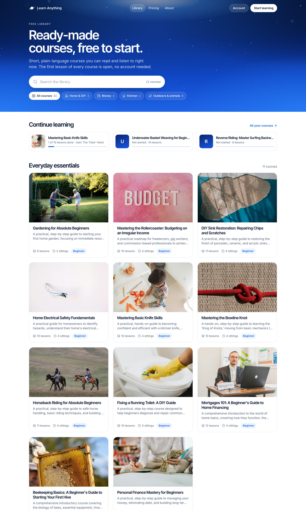
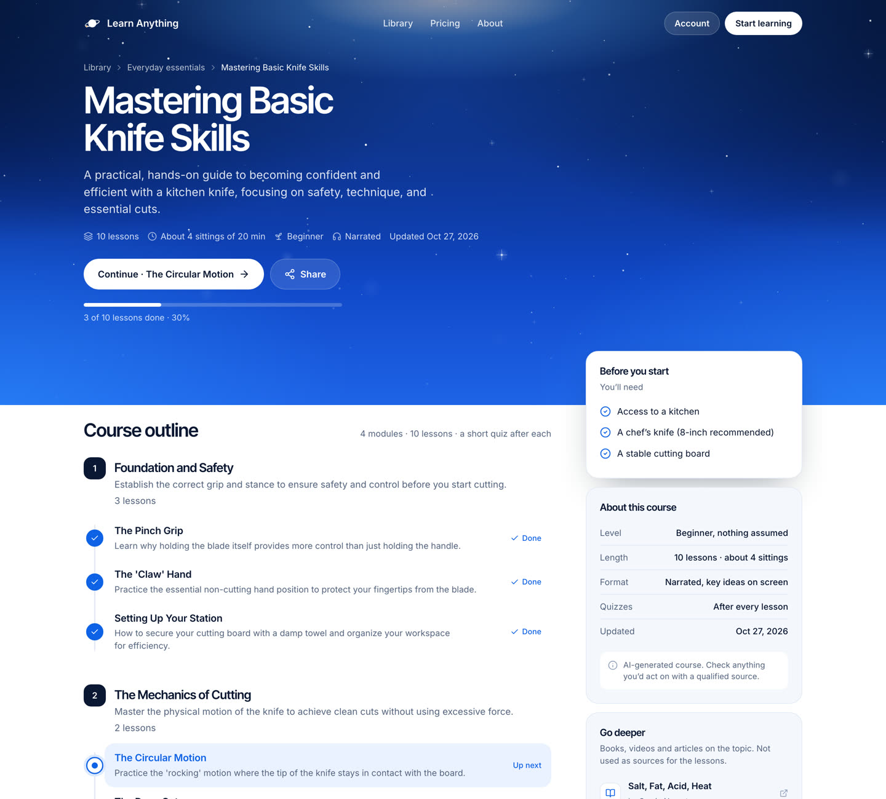
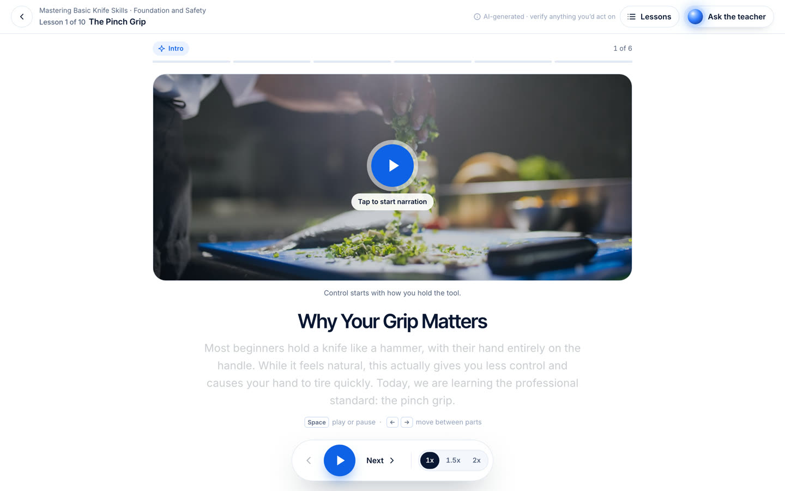
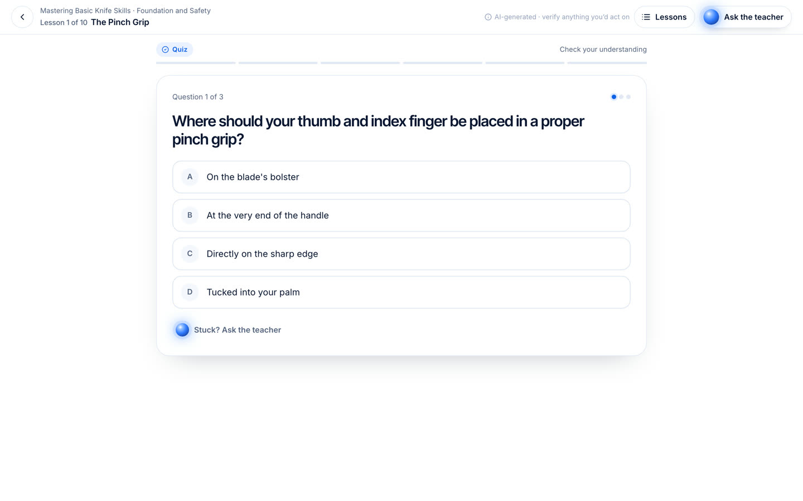

Open the prototype
Real content from the live site (the Basic Knife Skills course and its first lesson). Progress, the "continue" states and the key ideas are sample data so each state can be seen. Pages open in a new tab.

Library
Sky hero with search and topic filters, a continue-learning strip, course cards. Phones get a dense list instead of tall cards.

Course page
One design for public and enrolled views: outline as a path with done / up-next states, a floating "before you start" card, sticky continue bar on phones.

Lesson player
Segmented progress, a stage for every visual kind, narration with word reveal, a floating player bar, the course outline in a drawer.

Quiz
Same shell, question card with lettered options, correct and incorrect states, the explanation, and "ask the teacher" one tap away.

Lesson complete
Replaces the 1.8-second auto-redirect: score, course progress, the next lesson one tap away, and the key ideas to take along.

Generating
The wait screen while a lesson is written: the ring-planet mark with the learner dot on its lap, the four steps, a tip.
On a phone
Full-length captures at 390 px, scrollable inside each frame. The lesson keeps the player docked at the bottom with safe-area padding; the course page shows a continue bar once the hero button scrolls away.


Before and after
Left: the live site on Oct 30. Right: the redesign at the same width.


What changed, and why
- One nav everywhere. The home page nav (mark, three links, Account, Start learning) now sits on every course page in a sky tone; the lesson gets a compact white bar with the same geometry.
- The sky as a page top, not a hero. A shorter band carries the page title; the same light from above, stars, and type. Content below is white so lessons and cards stay calm.
- Library is scannable. Search, topic filters, lesson count and sittings on each card. On phones each course is one 92 px row, so six courses fit a screen instead of one and a half.
- Course page shows where you are. Modules are numbered, lessons form a path with done, up-next and locked states, and the first card tells you what to have ready. Public and enrolled share one layout.
- Lesson orientation. "Lesson 1 of 10", a Lessons drawer to jump around without leaving, and six ticks for the six parts of the lesson.
- Player bar. Floats at the bottom on desktop, docks full-width on phones with safe-area padding; 58 px play, 44 px prev/next, speed as a segmented pill (a cycling pill on phones).
- Visual kinds. All ten segment visuals restyled into one stage language; code blocks go navy, charts use the brand blues.
- Completion moment. A small sky card with score, course progress and the next lesson replaces the silent redirect back to the course.
- Honest copy only. Nothing invented: lesson counts, levels, dates and resources come from the site. Sittings are derived from lesson count the same way the live course page does it.
- Motion stays light. The starfield and the light are the only ambient motion; everything else is state change. Reduced motion is respected throughout.
Lovable handoff
Download the zip or browse the source: plain React components and one scoped stylesheet, written for the existing stack (TanStack Start, React 19, Tailwind v4, shadcn, lucide-react, recharts). The README carries the paste-ready prompt. No new dependencies.
src/styles/courses.css all styles, scoped under .la-app, la- prefixed
src/components/site/ SiteHeader, SiteFooter, SkyBand, Starfield, PlanetMark
src/components/library/ LibraryPage, CourseCard, ContinueStrip
src/components/course/ CoursePage, CourseOutline, CourseSidebar, types
src/components/lesson/ LessonShell, LessonTopBar, SegmentProgress, PlayerBar,
LessonPlayer (logic kept, markup new), SegmentVisual,
Quiz, LessonComplete, LessonsDrawer, GenerationLoader
src/routes/*.example.tsx how each route wires the components
reference/ the stills on this page
- Re-style, not a rebuild. Data loading, caching, progress, the audio pipeline and the ElevenLabs teacher stay as they are. Components take the data the routes already have.
- LessonPlayer keeps its logic. Audio element, word timings, keyboard shortcuts and the tap-to-play fallback are carried over line for line; only the rendered structure changes.
- Quiz and GenerationLoader keep their props, so the routes do not change their calls.
- Type-checked against React 19, @tanstack/react-router, lucide-react and recharts before packaging.